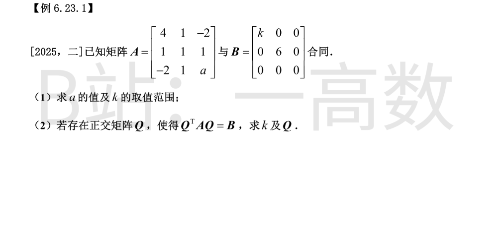
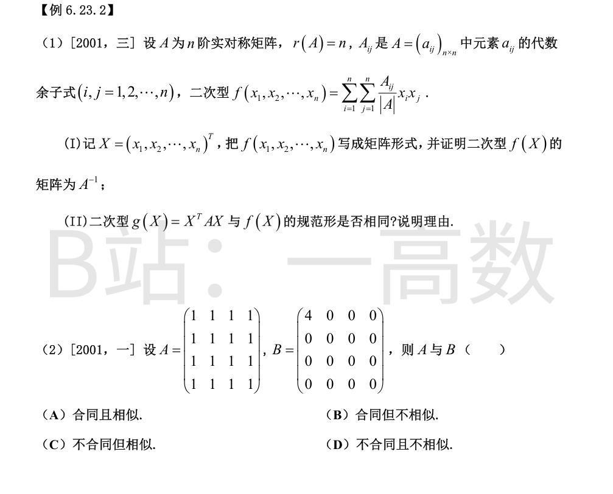

合同 $\Rightarrow$ 同秩。$|B|=0$，故 $|A|=0$：$|A|=3(a-4)=0$，得 $a=4$。
$a=4$ 时 $A=\begin{pmatrix}4&1&-2\\ 1&1&1\\ -2&1&4\end{pmatrix}$ 的顺序主子式 $\Delta_1=4>0,\ \Delta_2=3>0$，且 $|A|=0$，由惯性定理 $A\simeq\mathrm{diag}(4,\tfrac34,0)$，即 $A$ 的惯性指数为（正 2, 负 0）、秩 2。
$B=\mathrm{diag}(k,6,0)$ 须有相同的秩与惯性指数：$k\neq0$ 且 $k>0$。故 $k>0$。
$Q$ 正交且 $Q^{T}AQ=B$，则 $A\sim B$，$B$ 的对角元即 $A$ 的全部特征值：$\{k,\,6,\,0\}$。
$\mathrm{tr}A=4+1+4=9=k+6+0$，得 $k=3$。
$a=4$ 时求 $A$ 的特征向量：
- $\lambda=3$：$(A-3E)x=0\Rightarrow(1,1,1)^{T}$，单位化 $\tfrac{1}{\sqrt3}(1,1,1)^{T}$；
- $\lambda=6$：$(A-6E)x=0\Rightarrow(1,0,-1)^{T}$，单位化 $\tfrac{1}{\sqrt2}(1,0,-1)^{T}$；
- $\lambda=0$：$Ax=0\Rightarrow(1,-2,1)^{T}$，单位化 $\tfrac{1}{\sqrt6}(1,-2,1)^{T}$。
按 $B=\mathrm{diag}(k,6,0)=\mathrm{diag}(3,6,0)$ 的顺序取
$$Q=\begin{pmatrix}\tfrac{1}{\sqrt3}&\tfrac{1}{\sqrt2}&\tfrac{1}{\sqrt6}\\ \tfrac{1}{\sqrt3}&0&-\tfrac{2}{\sqrt6}\\ \tfrac{1}{\sqrt3}&-\tfrac{1}{\sqrt2}&\tfrac{1}{\sqrt6}\end{pmatrix},$$
则 $Q^{T}AQ=\mathrm{diag}(3,6,0)=B$（已数值验证）。

(I) 记 $A^{*}$ 为 $A$ 的伴随矩阵，则 $(A^{*})_{ij}=A_{ji}$。因 $A$ 实对称，$A^{*}$ 对称，且 $AA^{*}=|A|E$，故
$$A^{*}=|A|\,A^{-1},\qquad (A^{-1})_{ij}=\frac{A_{ji}}{|A|}=\frac{A_{ij}}{|A|}.$$
于是
$$f(X)=\sum_{i=1}^{n}\sum_{j=1}^{n}\frac{A_{ij}}{|A|}x_ix_j=X^{T}A^{-1}X,$$
其中 $A^{-1}$ 对称（实对称可逆阵的逆仍对称），故二次型 $f$ 的矩阵恰为 $A^{-1}$。
(II) 相同。取可逆矩阵 $C=A^{-1}$，则
$$C^{T}AC=(A^{-1})^{T}AA^{-1}=A^{-1}AA^{-1}=A^{-1},$$
即 $A$ 与 $A^{-1}$ 合同。$g$ 的矩阵为 $A$、$f$ 的矩阵为 $A^{-1}$，二者合同，故 $g(X)$ 与 $f(X)$ 有相同的规范形。
$A$ 全 1：每行和为 4，故 $\lambda=4$（特征向量 $(1,1,1,1)^{T}$）；$r(A)=1$，其余特征值全为 $0$，即特征值 $4,0,0,0$。
$B=\mathrm{diag}(4,0,0,0)$ 的特征值也是 $4,0,0,0$。$A,B$ 均实对称，特征值相同 $\Rightarrow$ 相似。
又 $A,B$ 均对称、秩 1、半正定，惯性指数同为（正 1, 负 0）$\Rightarrow$ 合同。
故合同且相似，选 (A)。